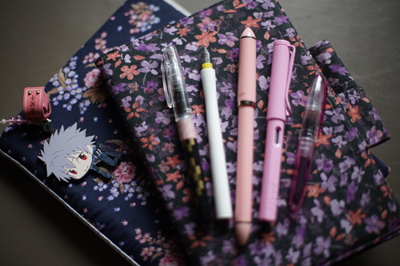
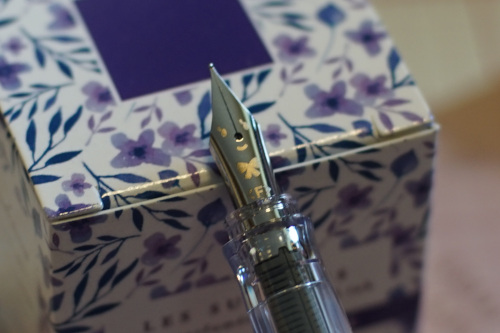
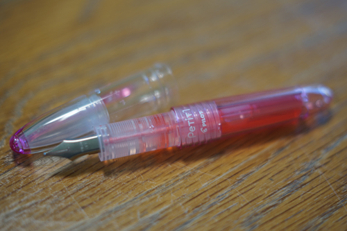
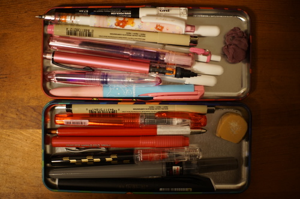

Blog posts related to penposting: 98, 130
My first fountain pen was the Pilot Kakuno F. I was convinced into buying it after hors told me about Herbin's violet scented ink. The nib is absolutely adorable. I love the little face with the bow! I had some trouble with it drying out, which was solved by filling the holes in the cap with hot glue. This pen did leak once after a flight to Arizona!
After about a year of use, I found there were cracks in the section around the nib. I had already bought a few more fountain pens by then, and decided to clean it out and put it away rather than risk leaks. I would like to get another Pilot body to put this cute nib on someday.
My second (impulse buy) fountain pen was a pink Pilot Petit1. I had no idea these existed until I held one in my hands. The nib appears to be the F version of the disposable Pilot Varsity, which shouldn't excite you. It's scratchy and the tines didn't seem to be aligned after I pulled it out of its little wrapper. It's a $4 pen after all. The feed on this one is a felt tube. It's still more reliable than my Kakuno. It has managed to not dry out after moderate time between use, but did dry out after a long period. The Petit1 F nib is thicker than my Kakuno F.
The Petit1 convinced me that if I want to buy another fountain pen, to buy up, not down. It is a cute little pen but not nearly as enjoyable. I did not end up following this thought with my next pens.
I had 0 plans to buy a Platinum Preppy... until I clicked on JetPens and saw a limited edition yagasuri print one. I ended up buying two because I wanted a Japanese fine nib and Platinum nibs are euro sized. I bought a red one in EF/02 and put the smaller nib and red section in on the yagasuri body, which came in F/03.

The regular preppy body is very tacky with printing and a non removable UPC. The yagasuri one is only lightly branded. I prefer it! The EF nib is slightly thinner than my Kakuno F.
I have so much trouble with these pens. It felt like every ink I owned clogged them! I ended up not using them much because of it. Within a couple months, I noticed both of their bodies would no longer screw on the section tightly because they had both cracked. I taped around the top of the bodies tightly and they now both stay on, but I found the 02 Preppy would only not clog if I filled it with black ink only. The 02 Preppy inked in black does not dry out after very long periods of time, but everything else about it sucks. My fountain pen recommendation is to never buy a Preppy. They're trash pens.
I have a whole page on the elusive Dollar Tree Jot fountain pen. It's definitely awful!
A very cute limited color release brought me to buy a Lamy Safari F in light rose. I'm generally not a fan of the shape of this pen or any of the colors it's regularly released in. The Western F shows shading unlike any of my Japanese F nibs. I find it to be the most enjoyable to write with and I haven't experienced issues with any inks.
I purchased a $1 thrift store fountain pen only labeled "Iridium Point Germany" to immediately break the section while cleaning and then decending down the rabbit hole of fake fountain pens. I don't recommend buying any fountain pens sold by old men with a lathe at craft fairs because they are definitely buying Chinese garbage components unknowingly.
The Sailor Compass Fude de Mannen is very fun to draw with but I don't prefer to write with it. It has a screw cap and I can't tell if I'm not screwing it all the way or if it's loose. The cap does not post securely. This is a very long pen, so there's no reason to post the cap to increase the length.
My nicest fountain pen is my LAMY Studio in rose. I chose this one due to it having a full metal outer and my history with breaking fountain pens. The feed (including the inner section that the body screws on) is plastic. As long as the plastic is ABS, I believe it will hold up like my Safari has so far. It's the heaviest pen I own at 33 grams. This can make it uncomfortable for long writing periods.
I have 3 scented fountain pen inks from J. Herbin. Violet is light sensitive. I haven't noticed issues with cocoa and rose yet, but I haven't tested them either. These are much more water resistant than Parker Quink and will not move nicely with water. Drawn lines remain if you apply a water brush to them. These inks are not interesting visually, but they do smell nice. Violet is the strongest scented of the 3 I own.
I got a big bottle of Parker Twink black on clearance at Staples of all places and it is great for ink paintings. It fully dissolves when paired with a water brush. The dye separates into blue and brown tones.
I bought 5 vintage Waterman inks at Goodwill: Green, Florida Blue, South Sea Blue, Purple, and Havana. Havana has wonderful dye separation (red and green), but is really tough to show. South Sea Blue is my favorite of the colors.
Like using tons of colors but don't like how long it takes to swap out inks? Try only partially filling your cartridge or check out dip pens with fountain pen nibs.
Uniball Jetstream is my favorite ballpoint pen. It feels smooth just like a gel pen!
Other than Jetstream, I don't really enjoy using these. I have ended up with a decent collection of Parker and Cross pens though. I always buy these refills and use them with a crappy notebook that gets a little wet sometimes. When I run out of thrift store refills, I will pack the bodies away and just use Jetstream.
Trying a .38mm Signo was life changing! I've come to really like the Signo line because of it. Trying a fountain pen was even more life changing because I don't use gel pens except when my fountain pen runs out of ink and I don't have time to change it. I used to use gel pens a lot at work where I had an unimportant job where it did not matter what color we used and we all ended up with a gel pen obsession.
I've been swapping refills into my favorite bodies. I have a Little Twin Stars Signo RT1 that I will be putting all my refills in as they run out. I tried just about every refill in my pen and here are my findings. I've found a lot of different brands fit in it, but not Energel. Surprisingly, UMR-83 does fit in Energel bodies!
Compatible: Uni-ball UMR-83, UMR-85, UMR-87, SXR-7 (Jetstream), Zebra JF Sarasa, Papermate InkJoy
Incompatible: Uni-ball UMR-1, LP2RF (Juice), SXR-89 (Jetstream), Pentel Energel LRN7, LR7
I do really like the ink in these. They're very smooth and fun! .5mm doesn't appear in the wild very often though and you'll likely be stuck with .7mm. The huge issue with American pens and pencils is .7mm is not "fine" and it's rare to find anything smaller.
I wasn't interested in the gimmick until I realized they could be used for sewing purposes. I'm a big fan of the markers for marking on fabric. Be careful though, the ink will reappear at freezing temperatures and because there's a chemical reaction that causes the ink to disappear, it's unclear if at some point the chemical reaction will stop occuring and you'll be stuck with the lines.
The oil-based Uni Pin is my go to for any washi tape marking needs. I haven't found anything better!
I bought a Copic Multiliner SP and they discontinued the refills so don't do that.
I hate highlighters. I cannot find a use for them other than filling my trash can. If you need to highlight it, you didn't need to write the rest of page. Take better notes.
In high school, I used PaperMate Clearpoint .7 mechanical pencils and switched to Bic Reaction .7 before I graduated. I was able to convince my mom to buy me a graphing calculator for geometry, which was a TI-84 Plus Silver Edition.
In college, I continued to use my Bic Reaction for a couple years, then bought a set of Pentel Twist-Erase GT .7. In my 2nd to last year, I lost my pencil after my Signals and System exam. I'm 90% sure I cried over it! I was so distraught that I went home and ordered a Rilakkuma Uni kuru toga to replace it with money I had made doing a Kaguya Luna commission for a friend. Before my kuru toga arrived, my chronic lab partner told me he had found my pencil after the exam and gave it back to me. Bless.
By the end of high school, I realized how much I hate spiral bound notebooks. The rings just get bent and then they become the largest pain to use! While I was in Seattle, I bought the cutest notebooks I could find at Daiso for notetaking. For homework and anything I had to do on paper, I used a box of dot matrix paper. After returning to the middle of nowhere, I used the cheapest composition notebooks I could find for notes. I had to leave my box of dot matrix paper behind in the move, so I started using paper out of recycling bins and my old lab print outs for homework and scratch paper. I also carried a small metal ruler which I found on a desk and never really used. Could have been handy I guess...
I continued to use my TI-84 for most of college, but my friend and lab partner was particularly partial to the TI-86 and gave me one, which was named "J. Boogard" after the name inscribed on the back. I bought another one at a Goodwill because I liked it so much. It is particularly good at vectors so complex numbers are a breeze! I found a TI-92 in a Goodwill during my last semester and holy cow this calculator is a beast!! I brought it to my Digital Communications Systems final but wasn't fast enough with it, so I switched back to my TI-86. This bad boy can do integrals which is awesome because they constantly slip my mind.
I didn't use pens often in school. I'm sure I carried one with me, but not one of any value. Pens are no good for engineering or math and you cannot change my mind. I always carry an extra eraser though! Sometimes it's just the cute silly ones from Daiso.
I'm not in school anymore, but I carry a pink Jetstream with me in my purse. That's all.